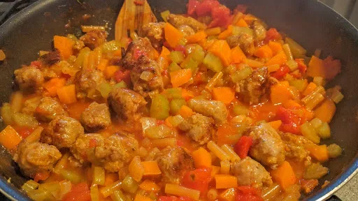

Bean & pasta meatball stew
55 mins
Serves 4

Ingredients
-
6
pork sausages
-
1
tbsp olive oil
-
2
onions, finely chopped
-
3
sticks celery, diced
-
2
carrots, sliced
-
3
cloves garlic, finely chopped
-
400
g can chopped tomatoes
-
1
l chicken stock
-
175
g maacaroni
-
400
g can cannellini beans, drained and rinsed
-
handful
parsley leaves, chopped
Instructions
- Snip the ends off the
sausages6
and remove the skins. Roll the meat into roughly walnut-sized meatballs. Heat half the oil1 tbsp
in a large wide pan and fry the sausage balls until browned, around 10 minutes. Remove from the pan and set aside.
- Add the rest of the
oil1 tbsp
to the pan. Tip in the onions2
, celery3 sticks
and carrots2
, and fry for 10 minutes until soft. Add the garlic3 cloves
and cook for 1 minute more. Tip in the tomatoes400 g can
and stock1 l
. Bring to the boil and simmer for 10 minutes.
- Stir in the macaroni and return the meatballs to the pan. Simmer for about 10 minutes until the
pasta175 g
is cooked and meatballs are cooked through. Stir in the beans400 g can
and heat until piping hot. Season, mix in the parsleyhandful
and serve.
-
kcal
688
-
fat
33 g
-
saturates
10 g
-
carbs
67 g
-
sugar
15 g
-
fibre
10 g
-
protein
34 g
-
salt
3.6 g
BBC Good Food: One-pot Dishes
Short Link
Long Link